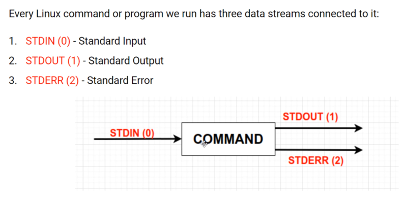
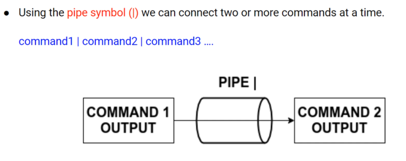
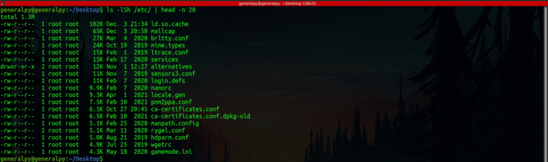
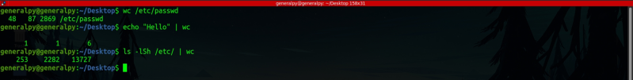

Linux/Unix philosophy is to divide complex tasks into simple modules and do each task separately and link those modules.
Piping is a mechanism in Linux that implements that philosophy. By using pipes we can chain multiple commands and can use data from previous command as input for next command.

There are 3 data streams for every linux program or command.
Standard Input(STDIN) : Usually connected from keyboard. This is default input stream.
Standard Output(STDOUT) : Usually connected to monitor. This is default output stream.
Standard Error(STDERR) : This stream is separated from STDOUT just to show errors differently. Contents are shown on monitor.

Below we used ls command to sort items of /etc dir in size descending. /etc contains a lot of items so we redirected output of ls to head command and use -n flag with argument 20 to get top 20 items from /etc dir sorted by size.

Like this we can chain multiple commands using the pipe operator.
wc command(short for word count) gives word,character and line count of a text.
wc <file|text|input_from_pipe>

In output of wc, first column is line count, second column is word count and last column is individual character count.
We can use different flags to get individual columns like -l for lines only , -w for words only and -c for characters only.